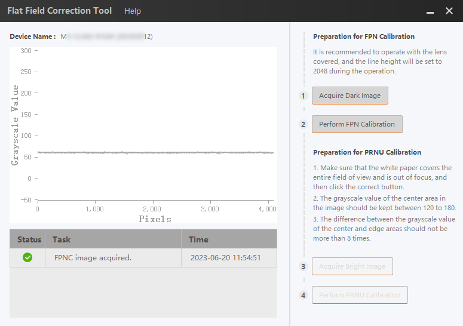
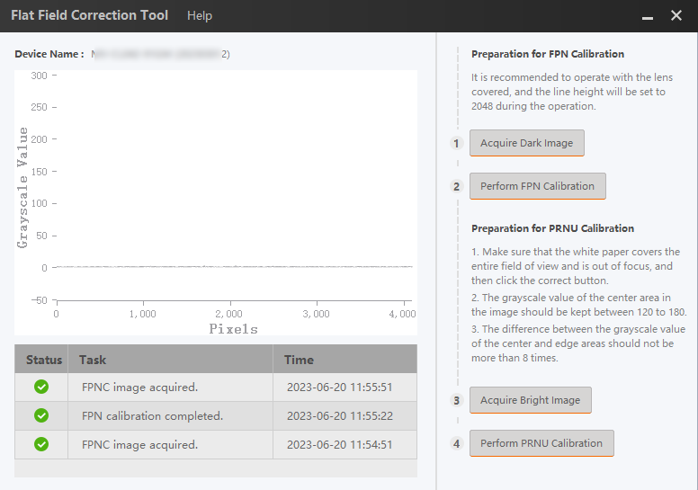
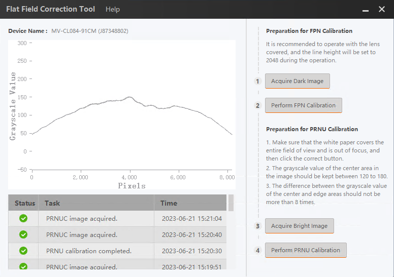

The flat field correction tool (hereinafter referred to as
"Tool")
can get
the
images before and after the FPN/PRNU calibration, and display the
grayscale
line of the image before and after the calibration.
Connect the camera and start acquisition.
-
Get prepared by following the instruction below Preparation for FPN Calibration.
-
Click Acquire Dark Image to get the image before
starting the FPN calibration.
The grayscale graph of the image is displayed on the left side
of the tool, and the execution result and time are displayed under the
graph.

Figure 1 Acquire Dark Image
-
Go back to the MVS and configure parameters of FPN
Calibration.
-
Click Perform FPN Calibration to get an image.
The grayscale graph of the image is displayed on the left side
of the tool, and the execution result and time are displayed under the
graph.

Figure 2 Perform FPN Calibration
-
Get prepared by following the instruction below Preparation for PRNU Calibration.
-
Click Acquire Bright Image to get the image before
starting the PRNU calibration.
The grayscale graph of the image is displayed on the left side of
the tool, and the execution result and time are displayed under the
graph.
Figure 3 Acquire Bright Image
-
Go back to the MVS and configure parameters of PRNU
Calibration.
-
Click Perform PRNU Calibration to get an image.
The grayscale graph of the image is displayed on the left side of
the tool, and the execution result and time are displayed under the
graph.

Figure 4 Perform PRNU Calibration